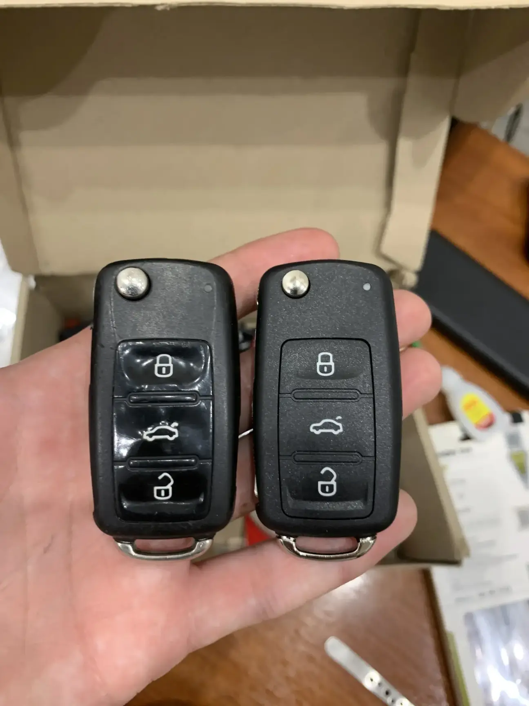

Заміна корпусу ключа авто в Ужгороді — від 500 грн

Якщо корпус вашого ключа тріснув, виламалися кнопки, зносилася гума або просто хочете оновити вигляд — не потрібно купувати новий ключ за кілька тисяч. Ми переставляємо плату, чіп і лезо у новий корпус. Перепрограмування не потрібне — ключ продовжує працювати з тим самим прив'язаним кодом. Маємо у наявності корпуси для всіх популярних марок: VW, Audi, Skoda, BMW, Mercedes, Toyota, Hyundai, Kia, Renault, Ford та інших.
Тріснув корпус ключа?
Заїжджайте — підберемо корпус і зробимо за 30 хвилин
Коли треба міняти корпус ключа
- Тріщина у корпусі — волога потрапить на плату, ключ вийде з ладу
- Кнопки западають, не натискаються або «глухі»
- Викидне лезо не вилітає або не фіксується
- Стерлися надписи на корпусі smart-key (Mercedes, BMW Display Key)
- Зламалося кільце для брелока
- Лезо хитається у пазі викидного ключа
- Хочете оновити вигляд після кількох років використання
Ціни на заміну корпусу ключа
| Послуга | Ціна | Час |
|---|---|---|
| Звичайний пульт (VW, Skoda, Audi старі) | від 500 грн | 15 хв |
| Викидний ключ (Hyundai, Kia, Renault, Ford) | від 700 грн | 20 хв |
| Smart-key Toyota, Mazda, Nissan | від 800 грн | 20 хв |
| Smart-key BMW, Mercedes | від 1200 грн | 30 хв |
| BMW Display Key (з екраном) | від 2500 грн | 40 хв |
| Корпус ключа-картки Renault | від 1500 грн | 30 хв |
| Заміна лиш кнопок (гумова накладка) | від 300 грн | 10 хв |
* Ціна включає корпус і роботу. Якщо потрібно фрезерувати лезо — окремо.
Як ми працюємо
- Оглядаємо ключ — визначаємо точну модель корпусу
- Підбираємо новий корпус — оригінальний або якісний аналог
- Акуратно розбираємо старий ключ
- Переставляємо плату, чіп та лезо у новий корпус
- Збираємо, перевіряємо роботу всіх кнопок
- За потреби — фрезеруємо нове лезо за оригіналом
Чи можна замість заміни корпусу зробити новий ключ?
Так — але це дорожче. Новий ключ з програмуванням коштує від 2000 до 8000 грн залежно від марки, тоді як заміна корпусу — від 500 до 2500 грн. Якщо чіп і плата всередині працюють — заміна корпусу це найдешевший варіант. Новий ключ робимо коли всередині пошкоджена плата або зник чіп.
Часті запитання
Чи треба перепрограмовувати ключ після заміни корпусу?
Ні. Прив'язка зберігається у чіпі та платі, які ми просто переставляємо у новий корпус. Ключ працює одразу після заміни.
Скільки коштує новий корпус ключа?
Залежить від типу і марки. Звичайний пульт VW/Skoda — від 500 грн. Викидний Hyundai/Kia — від 700 грн. Smart-key BMW/Mercedes — від 1200 грн. Робота входить у вартість.
Корпус оригінальний чи китайський?
Маємо оригінальні (OEM) та якісні аналоги. Оригінальні дорожчі на 200-500 грн, виглядають і збираються краще. Підбираємо за вашим бюджетом.
Чи треба здавати ключ заздалегідь?
Ні, робимо при вас за 15-40 хвилин. Можете зачекати або погуляти неподалік.
Не знаєте чи є потрібний корпус?
Зателефонуйте і скиньте фото — підкажемо